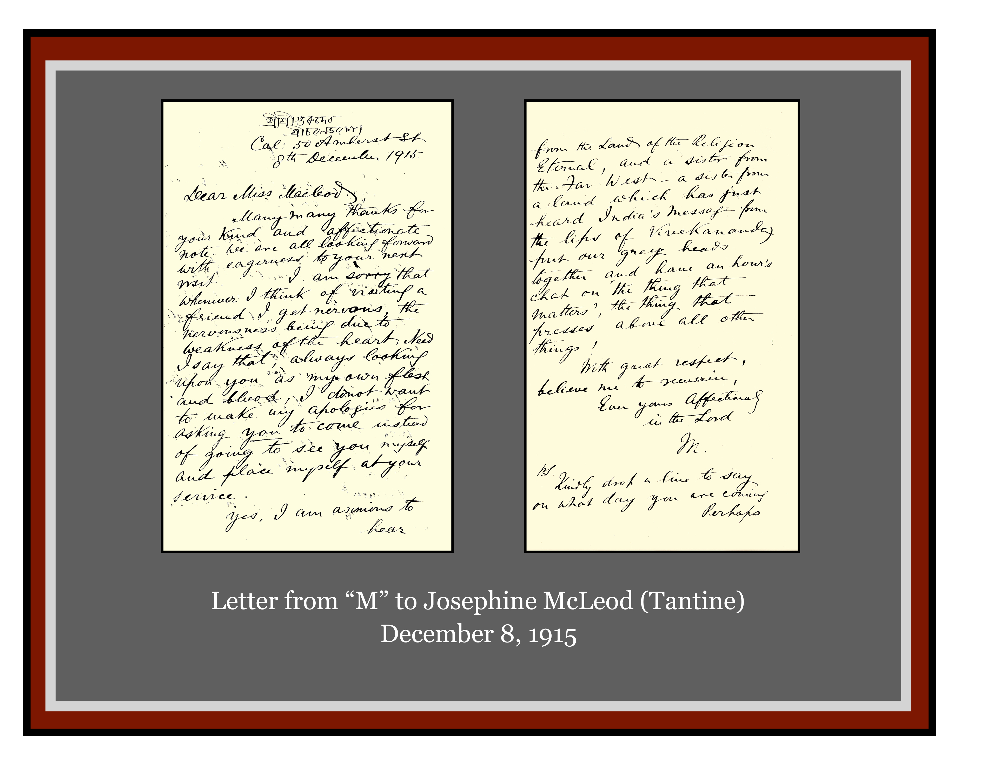
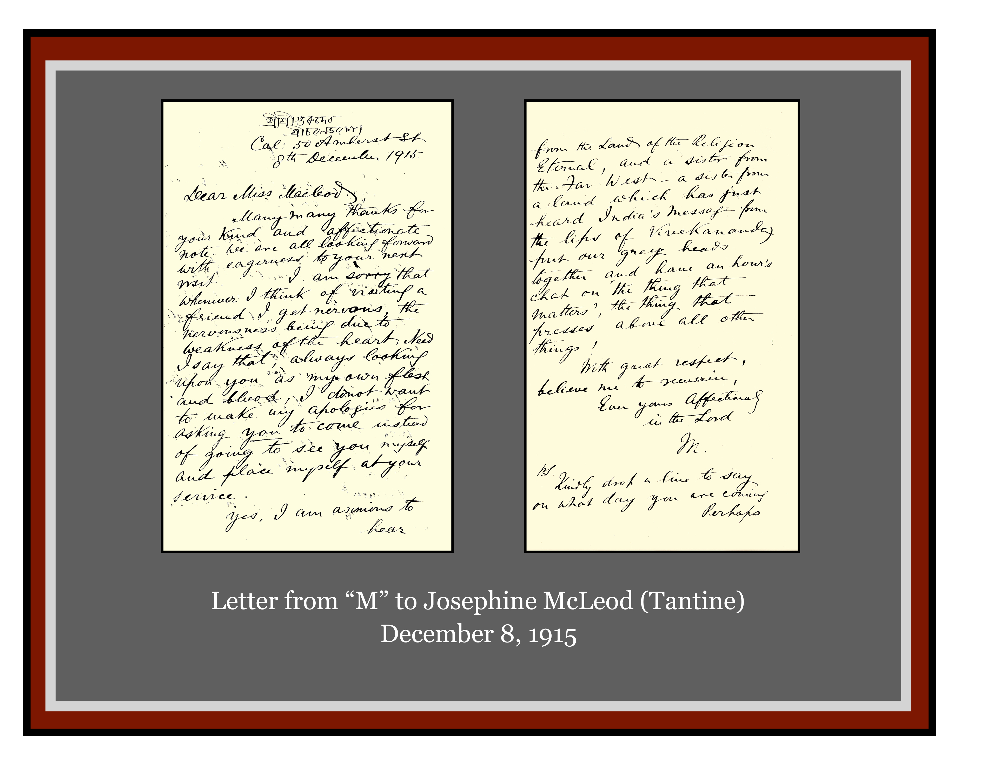
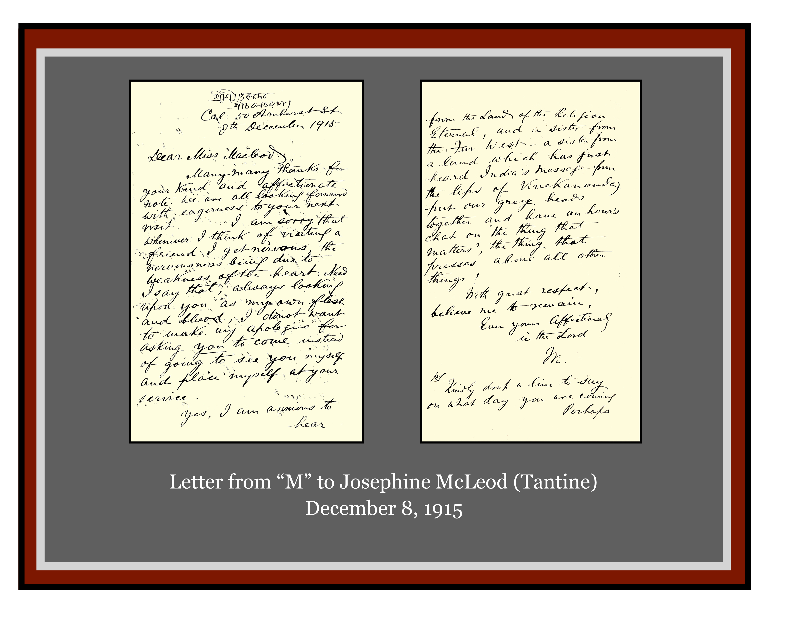

Ramakrishna-Vivekananda Center of New York
A Vedanta Temple for Universal Worship
About
The Center
Minister & Spiritual Leader
Contact Us
Teachings
Vedanta
Sri Ramakrishna
Holy Mother
Swami Vivekananda
Swami Yuktatmananda
Swami Adiswarananda
Swami Nikhilananda
Universal Teachings
Ramakrishna Order
Headquarters
History
Emblem
Centers Worldwide
Activities
Services
Classes
Special Services
Library and Bookstore
Interfaith Activities
Vivekananda Cottage at Thousand Island Park
Media
Audio
Video
Image Gallery
Facebook
Shop
Online Shop
Bookstore Hours
Media
Audio
Video
Image Gallery
Facebook
Archive Album

Back
Home
About
Teachings
Ramakrishna Order
Media


 
